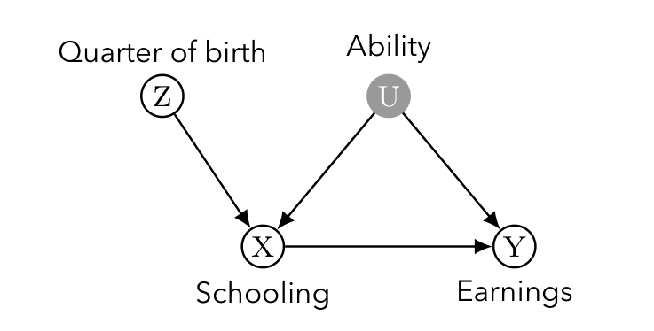
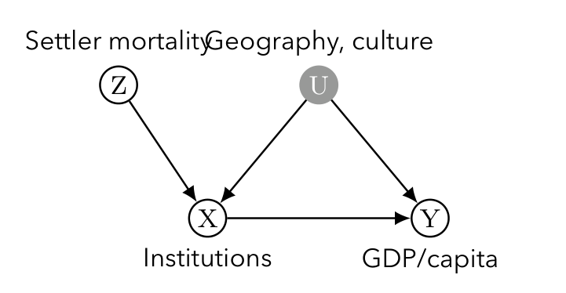
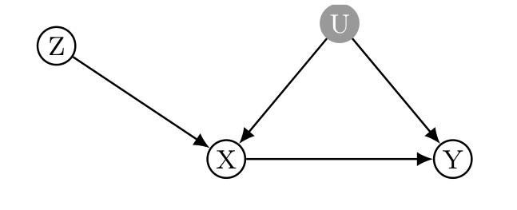
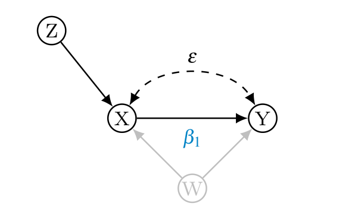
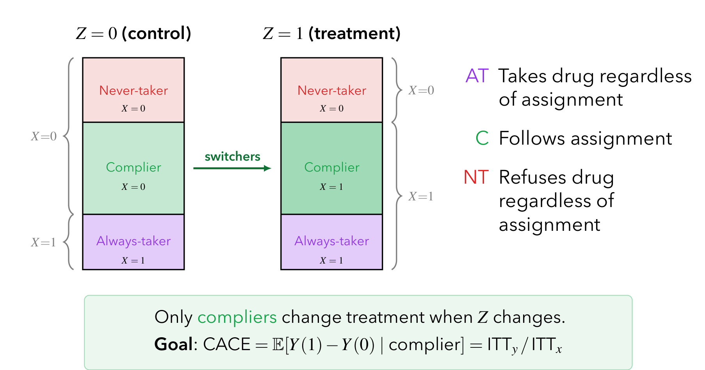
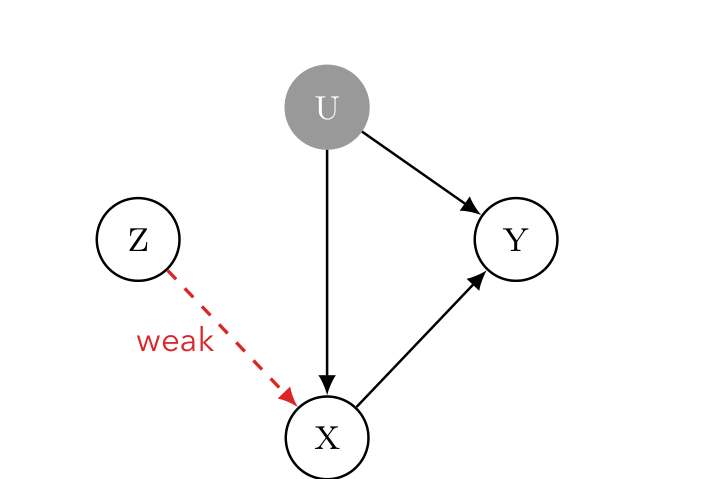

본 포스트는 서울대학교 GSDS Sanghack Lee 교수님의 Causal Inference 강의 자료(Instrumental Variables)를 바탕으로, 강의를 처음 듣는 독자도 논리적 흐름을 따라갈 수 있도록 재구성한 것입니다.
한 줄 요약 (TL;DR)
“처치에만 작용하고 결과에는 직접 닿지 않는 변수 \(Z\)를 하나 확보하면, 교란 요인을 전혀 관측하지 못해도 \(Z \to Y\) 효과를 \(Z \to X\) 효과로 나누어 인과효과를 되찾을 수 있습니다.”
지금까지 살펴본 뒷문 조정(backdoor adjustment)은 처치와 결과 사이의 교란 요인을 전부 관측해야만 작동합니다. 도구 변수(IV)는 이 요구를 포기하는 대신, 처치에만 외생적으로 작용하는 변수 \(Z\)를 찾는 문제로 식별을 바꿔 놓습니다. 선형성과 상수 효과를 가정하면 IV 추정량 · ILS · 2SLS가 모두 하나의 값 \(\beta_1 = \mathrm{Cov}(Y,Z)/\mathrm{Cov}(X,Z)\)로 수렴하고, 이 모수적 가정을 버리고 잠재적 결과 위에서 무작위 배정 · 단조성 · 배제 제약만 두면 똑같은 비율이 이번에는 순응자(complier) 집단의 평균 처치효과인 CACE/LATE를 식별합니다. 얻은 것은 미관측 교란으로부터의 자유이고, 치른 대가는 추정 대상이 전체 모집단이 아니라 국소 집단으로 좁아진다는 점입니다.
도구 변수의 동기와 사례 (Motivation and Case Studies)
이번 포스트에서는 인과추론과 계량경제학을 가로지르는 가장 강력한 도구 중 하나인 도구 변수(Instrumental Variable, IV)를 다룹니다. IV는 처치(treatment)와 결과(outcome) 사이에 관측되지 않은 교란(unobserved confounding)이 존재하여 단순 회귀로는 인과 효과를 식별할 수 없을 때, 이를 우회하여 효과를 추정할 수 있게 해 주는 핵심 기법입니다.
실제 연구에서의 도구 변수 (Instrumental Variables in Action)
IV가 추상적인 장치가 아니라는 점을 먼저 확인하고 가겠습니다. 아래는 경제학·정치경제학에서 널리 인용되는 IV 연구들입니다.
| 연구 | 도구 \(Z\) | 처치 \(X\) | 결과 \(Y\) |
|---|---|---|---|
| Angrist & Krueger (1991) | 출생 분기(quarter of birth) | 교육 연수 | 소득 |
| Card (1995) | 대학과의 물리적 거리 | 교육 연수 | 소득 |
| Acemoglu et al. (2001) | 정착민 사망률(settler mortality) | 제도의 질 | 1인당 GDP |
| Miguel et al. (2004) | 강수량 충격(rainfall shocks) | 경제 성장 | 내전 발생 |
| Levitt (1996) | 과밀 수용 관련 소송 | 재소자 수 | 범죄율 |
- 공통 구조는 하나입니다. 연구자가 배정하지 않았지만 사실상 무작위처럼 처치를 흔드는 외생적 변동을 찾아, 그 변동이 결과에 남긴 흔적으로부터 인과효과를 역산합니다.
사례 1: 교육의 수익률 (Returns to Education)

- Angrist & Krueger (1991): 의무교육법이 출생 분기와 상호작용한다는 점을 이용했습니다. 연초에 태어난 학생은 같은 학년 안에서 상대적으로 나이가 많아 의무교육 연령에 더 일찍 도달하고, 따라서 더 일찍 학교를 그만둘 수 있어 교육 연수가 짧아집니다. 출생 분기 자체는 능력과 무관하다고 볼 수 있으므로 도구 후보가 됩니다.
- Card (1995): 4년제 대학 근처에서 자라는 것이 진학 비용을 낮춘다는 점을 이용했습니다. 근접성 → 더 많은 교육 → 더 높은 소득이라는 경로를 상정합니다.
사례 2: 제도와 경제 발전 (Institutions and Development)

- Acemoglu, Johnson, Robinson (2001): 정착민 사망률이 높았던 지역에서는 정착 대신 자원 수탈을 목적으로 하는 착취적(extractive) 제도가, 낮았던 지역에서는 포용적(inclusive) 제도가 자리 잡았습니다. 이 제도적 차이가 오늘날까지 지속되어 국가 간 소득 격차를 설명한다는 것이 논지입니다.
- Miguel et al. (2004): 아프리카의 내전을 연구하며 강수량을 경제 성장의 도구로 사용했습니다.
왜 도구 변수인가? (Why Instrumental Variables?)
- 지금까지 우리는 뒷문 조정(backdoor adjustment)으로 인과효과를 식별해 왔습니다. 이 방법은 \(X\)와 \(Y\) 사이의 교란 요인을 모두 측정했다는 전제 위에서만 작동합니다.
- 문제: 일부 교란 요인이 관측되지 않는다면 어떻게 될까요? 뒷문 기준(backdoor criterion)은 실패하고, 어떤 조정집합으로도 교란 경로를 차단할 수 없습니다.
- 아이디어: \(Y\)에 오직 \(X\)를 통해서만 영향을 주는 변수 \(Z\)를 찾습니다.

자연 실험으로서의 IV (IV as a Natural Experiment)
- IV는 경제학에서 가장 널리 쓰이는 기법 중 하나입니다.
- 그러나 경제학에서 사용되는 대부분의 IV는 무작위 실험의 맥락이 아닙니다. 대신 IV는 흔히 자연 실험(natural experiment)으로 간주됩니다. 즉, 연구자가 의도적으로 배정하지 않았지만 마치 무작위처럼 처치를 변화시키는 외생적 변동을 도구로 활용합니다.
- IV에 대한 포괄적 리뷰로는 Imbens(2014), “Instrumental Variables: An Econometrician’s Perspective”를 참고할 수 있습니다.
“좋은” 도구의 조건 (Conditions of “Good” Instruments)
- IV는 매우 인기 있지만, 좋은 도구를 찾기는 어렵습니다.
- 좋은 도구는 다음 두 조건을 동시에 만족해야 합니다.
- 관련성(relevance): 처치에 강한 영향을 주어야 합니다(높은 \(\mathrm{Cov}(X, Z)\)). 그렇지 않으면(약한 도구, weak instrument) 2SLS 추정치의 분산이 매우 커집니다.
- 배제 제약(exclusion restriction): 결과에 대한 직접적인 효과가 전혀 없어야 합니다. 도구는 오직 처치를 통해서만 결과에 영향을 줄 수 있어야 합니다.
두 조건의 지위는 대칭적이지 않습니다. 관련성은 데이터로 검증할 수 있지만(\(Z\)와 \(X\)의 연관은 관측 가능합니다), 배제 제약은 원리적으로 검증할 수 없습니다. \(Z \to Y\)의 직접 경로가 없다는 주장은 데이터가 아니라 해당 분야의 실질적 지식으로만 방어됩니다. IV 논문의 대부분이 “왜 이 도구가 결과에 직접 영향을 주지 않는가”를 설득하는 데 지면을 쓰는 이유입니다.
두 갈래의 시선
강의 자료는 IV를 두 가지 관점에서 조명합니다.
- 선형 가정 하의 IV (IV under Linear Assumption): 계량경제학에서 전통적으로 사용해 온 관점으로, 선형 구조 방정식을 가정하고 ILS(간접 최소제곱)·2SLS(2단계 최소제곱)를 통해 계수 \(\beta_1\)을 추정합니다.
- 비순응이 있는 무작위 실험 (Randomized Experiment with Noncompliance): 잠재적 결과(potential outcome) 프레임워크 위에서, 처치 배정(assignment)을 도구로 보고 순응자(complier)라는 특정 부분 모집단에 대한 인과 효과(CACE/LATE)를 식별합니다.
이 두 관점은 서로 다른 가정에서 출발하지만, 마지막에 가서 본질적으로 동일한 추정량으로 수렴한다는 점이 이 강의의 백미입니다.
1. 선형 가정 하의 IV (IV under Linear Assumption)
1.1 도구 변수란? (Instrumental Variable)
먼저 IV가 등장하는 인과 그래프(causal graph)를 살펴보겠습니다.

이 그래프에서 우리의 목표는 처치 \(X\)가 결과 \(Y\)에 미치는 인과적 영향, 즉 화살표 위에 표시된 계수 \(\beta_1\)을 일관되게(consistently) 추정하는 것입니다.
1.2 계량경제학적 IV 접근의 개요 (Brief review of econometric approach to IV)
계량경제학에서는 결과 \(Y\)를 스칼라 처치 \(X\)와 공변량 집합 \(W\)에 선형으로 관계 짓는 전통적 모형에서 출발합니다.
\[ Y_i = \beta_0 + \beta_1 X_i + \beta_2 W_i + \varepsilon_i \]
- 여기서 추정 대상(estimand)은 처치의 계수인 \(\beta_1\)입니다.
- 용어 정리: 경제학에서는 \(Y\)와 교란된(confounded) 변수를 내생적(endogenous), 교란되지 않은 변수를 외생적(exogenous)이라고 부릅니다.
- \(X\): 내생적 처치 변수 (endogenous treatment)
- \(W\): 외생적 공변량 (exogenous covariate)
핵심 난점: 내생성으로 인한 OLS 편향
- 문제: 오차항 \(\varepsilon_i\)가 처치 변수 \(X_i\)와 상관되어 있습니다(교란됨). 즉, \[ \mathrm{Cov}[X_i, \varepsilon_i] \neq 0 \]
- 이때 OLS 추정의 직교 조건(orthogonality condition)이 깨지므로, \(\beta_1\)의 직접적인 OLS 추정량은 편향(biased)됩니다.
- 직관적으로, 우리가 \(X\)의 변화에 대응하는 \(Y\)의 변화를 보더라도, 그 변화의 일부는 진짜 인과 효과 \(\beta_1\) 때문이 아니라 \(X\)와 \(\varepsilon\)이 함께 움직이는 교란 때문일 수 있습니다.
이 난점을 해결하기 위해 도구 변수 \(Z\)를 도입합니다.
1.3 도구 변수의 정의와 식별 (IV conditions)
차원이 \(K\)인 도구 변수 벡터 \(Z\)는 다음 두 조건을 만족해야 합니다.
- \(\varepsilon_i \perp W_i\)
- \(\varepsilon_i \perp Z_i \mid W_i\)
이 둘을 합치면 다음과 같이 표현됩니다.
\[ \varepsilon_i \perp (Z_i, W_i) \]
- 직관: 도구 \(Z\)는 \(Y\)의 오차항(교란을 포함)과 독립이어야 합니다. 즉, \(Z\)는 \(X\)를 통하지 않고서는 \(Y\)에 영향을 주는 어떤 경로도 가지면 안 됩니다. 앞서 살펴본 배제 제약(exclusion restriction)을 선형 모형의 언어로 다시 쓴 것입니다.
식별 상태(identification status)
도구의 개수 \(K\)에 따라 식별 상태가 달라집니다.
- \(K > 1\): 과대식별(over-identified) — 추정에 필요한 것보다 도구가 많음
- \(K = 1\): 정확식별(just-identified) — 도구의 수가 미지수의 수와 정확히 일치
이하에서는 가장 기본적인 정확식별(just-identified) 경우를 중심으로 전개합니다.
1.4 정확식별·공변량이 없는 경우 (Case of just-identified, no covariates)
가장 단순한 상황(\(K=1\), 공변량 \(W\) 없음)에서 IV 추정량은 두 공분산의 비(ratio of covariances)로 주어집니다.
\[ \hat{\beta}_{1,\text{iv}} = \frac{\widehat{\mathrm{Cov}}(Y_i, Z_i)}{\widehat{\mathrm{Cov}}(X_i, Z_i)} = \frac{\frac{1}{N}\sum_{i=1}^{N} (Y_i - \bar{Y})(Z_i - \bar{Z})} {\frac{1}{N}\sum_{i=1}^{N} (X_i - \bar{X})(Z_i - \bar{Z})} \]
여기서 \(\bar{Y}, \bar{X}, \bar{Z}\)는 표본 평균입니다.
이진 도구의 경우: Wald 추정량 (Wald estimator)
도구 \(Z\)가 이진(binary) 변수일 때, 위 식은 Wald 추정량으로 단순화됩니다.
\[ \hat{\beta}_{1,\text{iv}} = \frac{\bar{Y}_1 - \bar{Y}_0}{\bar{X}_1 - \bar{X}_0} \]
- \(\bar{Y}_z, \bar{X}_z\)는 각각 \(Z = z\,(=0,1)\) 그룹 내에서의 표본 평균입니다.
- 해석: 분자는 도구 값이 0에서 1로 바뀔 때 \(Y\)의 평균 변화, 분모는 같은 변화에 따른 \(X\)의 평균 변화입니다. 도구가 결과에 미친 효과를, 도구가 처치에 미친 효과로 “환산(scaling)”해 주는 것입니다. 이 직관은 뒤에서 다룰 CACE/LATE와 정확히 일치합니다.
ILS 해석 (Indirect Least Squares)
위 IV 추정량은 간접 최소제곱(ILS)으로도 해석됩니다. 두 개의 축약형(reduced-form) 회귀를 생각해 보겠습니다.
\[ \begin{aligned} Y_i &= \pi_{10} + \pi_{11}\cdot Z_i + \varepsilon_{1i} \\ X_i &= \pi_{20} + \pi_{21}\cdot Z_i + \varepsilon_{2i} \end{aligned} \]
- 첫 번째 식은 결과 \(Y\)를 도구 \(Z\)에 직접 회귀시킨 축약형(reduced form)입니다.
- 두 번째 식은 처치 \(X\)를 도구 \(Z\)에 회귀시킨 1단계(first stage) 회귀입니다.
ILS 추정량은 이 두 최소제곱 추정치의 비(ratio)로 정의됩니다.
\[ \hat{\beta}_{1,\text{ils}} = \frac{\hat{\pi}_{11}}{\hat{\pi}_{21}} \]
- 직관: \(\hat{\pi}_{11}\)은 “\(Z\)가 \(Y\)에 주는 총효과”, \(\hat{\pi}_{21}\)은 “\(Z\)가 \(X\)에 주는 효과”입니다. 경로 \(Z \to X \to Y\)를 따라 생각하면, 총효과 = (1단계 효과) \(\times\) (\(X \to Y\) 효과)이므로, 총효과를 1단계 효과로 나누면 우리가 원하는 \(X \to Y\) 효과 \(\beta_1\)이 분리되어 나옵니다.
2SLS 해석 (Two Stage Least Squares)
같은 추정량을 2단계 최소제곱(2SLS)으로 다시 해석할 수 있습니다.
1단계 (Stage 1): 도구 \(Z\)로부터 처치 값을 OLS로 예측합니다. \[ X_i = \pi_0 + \pi_1 \cdot Z_i + \varepsilon_i, \qquad \hat{X}_i = \hat{\pi}_0 + \hat{\pi}_1 \cdot Z_i \]
2단계 (Stage 2): 1단계에서 얻은 예측값 \(\hat{X}_i\)를 결과 모형에 대입합니다. \[ Y_i = \pi_2 + \pi_3 \hat{X}_i + \varepsilon_i \]
2단계에서 OLS로 \(\pi_3\)를 추정하면 그것이 곧 2SLS 추정량 \(\hat{\beta}_{1,\text{2sls}}\)가 됩니다.
직관: \(\hat{X}_i\)는 \(X\) 중에서 오직 외생적 도구 \(Z\)로 설명되는 부분, 즉 \(X\)의 “교란되지 않은(unconfounded) 성분”입니다. 오차항과 얽힌 부분을 제거한 깨끗한 \(X\)만 사용하므로 편향이 제거됩니다.
세 추정량이 모두 일치함을 쉽게 확인할 수 있습니다. \[ \hat{\beta}_{1,\text{iv}} = \hat{\beta}_{1,\text{ils}} = \hat{\beta}_{1,\text{2sls}} \]
1.5 정확식별·공변량이 있는 경우 (Case of just-identified, with covariates)
위 논의는 공변량 \(W\)가 있는 경우로 자연스럽게 확장됩니다.
간접 최소제곱(ILS): 두 개의 축약형 회귀에 \(W\)를 추가합니다. \[ \begin{aligned} Y_i &= \pi_{10} + \pi_{11}Z_i + \pi_{12}W_i + \varepsilon_{1i} \\ X_i &= \pi_{20} + \pi_{21}Z_i + \pi_{22}W_i + \varepsilon_{2i} \end{aligned} \] ILS 추정량은 여전히 \(\hat{\beta}_{1,\text{ils}} = \hat{\pi}_{11}/\hat{\pi}_{21}\)입니다.
2SLS: 1단계에서 \(W\)를 포함해 \(\hat{X}_i\)를 예측한 뒤, \[ \hat{X}_i = \hat{\pi}_{20} + \hat{\pi}_{21}Z_i + \hat{\pi}_{22}W_i \] 2단계에서 \(W\)와 \(\hat{X}_i\)를 함께 회귀변수로 넣어 \(\beta_1\)을 추정합니다. \[ Y_i = \beta_0 + \beta_1 \hat{X}_i + \beta_2 W_i + \eta_i \] 2SLS 추정량은 이 2단계 회귀에서 \(\beta_1\)의 OLS 추정량입니다.
1.6 IV 추정량의 유도 (IV estimator derivation)
이제 IV 추정량이 왜 위와 같은 공분산 비로 나오는지 직접 유도해 보겠습니다. 다음 두 식이 주어졌다고 합시다.
\[ \begin{aligned} X_i &= \pi_{20} + \pi_{21}Z_i + \pi_{22}W_i + \varepsilon_{2i} \\ Y_i &= \beta_0 + \beta_1 X_i + \underbrace{\beta_2 W_i + \varepsilon_i}_{\eta_i} \end{aligned} \]
여기서 결과 식의 \(\beta_1 X_i\)를 제외한 나머지 항을 묶어 \(\eta_i\)로 정의했습니다. IV의 핵심 성질은 다음 두 가지입니다.
\[ \mathrm{Cov}[X_i, Z_i] \neq 0 \quad (\text{관련성, relevance}), \qquad \mathrm{Cov}[\eta_i, Z_i] = 0 \quad (\text{외생성, exogeneity}) \]
- 첫째 조건은 도구가 처치와 실제로 연관되어 있어야 한다는 관련성(relevance) 조건입니다.
- 둘째 조건은 도구가 결과의 오차 구조(교란 포함)와 무관해야 한다는 외생성(exogeneity) 조건입니다.
- 여기서 한 가지를 짚고 넘어가야 합니다. \(\eta_i = \beta_2 W_i + \varepsilon_i\)이므로 \(\mathrm{Cov}[\eta_i, Z_i] = \beta_2\,\mathrm{Cov}[W_i, Z_i] + \mathrm{Cov}[\varepsilon_i, Z_i]\)입니다. 따라서 \(\mathrm{Cov}[\eta_i, Z_i] = 0\)을 얻으려면 §1.3의 \(\varepsilon \perp (Z, W)\)만으로는 부족하고, \(\mathrm{Cov}[W_i, Z_i] = 0\), 즉 도구가 공변량과도 무상관이라는 조건이 추가로 필요합니다. 아래 유도는 이 가정 위에서 진행됩니다(공변량과 상관된 도구를 다루려면 §1.5처럼 \(W\)를 두 회귀에 모두 넣어 통제해야 합니다).
단계별 유도
결과 식의 양변과 \(Z_i\)의 공분산을 취합니다. 공분산은 선형 연산이며, 상수항 \(\beta_0\)의 공분산은 0임을 이용합니다.
\[ \begin{aligned} \mathrm{Cov}[Y_i, Z_i] &= \mathrm{Cov}[\beta_0 + \beta_1 X_i + \eta_i,\; Z_i] \\ &= \underbrace{\mathrm{Cov}[\beta_0, Z_i]}_{=0} + \beta_1 \mathrm{Cov}[X_i, Z_i] + \underbrace{\mathrm{Cov}[\eta_i, Z_i]}_{=0 \;(\text{외생성})} \\ &= \beta_1 \mathrm{Cov}[X_i, Z_i] \end{aligned} \]
따라서 \(\beta_1\)에 대해 정리하면,
\[ \beta_1 = \frac{\mathrm{Cov}[Y_i, Z_i]}{\mathrm{Cov}[X_i, Z_i]} \]
분자와 분모를 모두 \(\mathrm{Var}[Z_i]\)로 나누면, 다음과 같이 축약형과 1단계의 비로 재해석됩니다.
\[ \beta_1 = \frac{\;\dfrac{\mathrm{Cov}[Y_i, Z_i]}{\mathrm{Var}[Z_i]}\;} {\;\dfrac{\mathrm{Cov}[X_i, Z_i]}{\mathrm{Var}[Z_i]}\;} = \frac{\text{Reduced form}}{\text{First stage}} \]
- \(\dfrac{\mathrm{Cov}[Y_i, Z_i]}{\mathrm{Var}[Z_i]}\) 는 \(Y\)를 \(Z\)에 회귀했을 때의 기울기, 즉 축약형(reduced form) 계수입니다.
- \(\dfrac{\mathrm{Cov}[X_i, Z_i]}{\mathrm{Var}[Z_i]}\) 는 \(X\)를 \(Z\)에 회귀했을 때의 기울기, 즉 1단계(first stage) 계수입니다.
- 이 결과는 앞서 본 ILS 추정량 \(\hat{\pi}_{11}/\hat{\pi}_{21}\)과 정확히 같은 구조입니다.
1.7 2SLS 추정량의 유도 (2SLS estimator derivation)
2SLS가 왜 일관된 추정량을 주는지 대입(substitution)을 통해 확인해 보겠습니다. 1단계 회귀를 \(X_i = \pi_{00} + \pi_{10}W_i + \pi_{11}Z_i + \varepsilon_{xi}\)로 쓰고, 이를 결과 모형 \(Y_i = \beta_0 + \beta_1 X_i + \beta_2 W_i + \varepsilon_i\)에 대입합니다.
\[ Y_i = \beta_1\bigl(\pi_{00} + \pi_{10}W_i + \pi_{11}Z_i + \varepsilon_{xi}\bigr) + \beta_2 W_i + \beta_0 + \varepsilon_i \]
이제 동류항을 \(Z_i\), \(W_i\), 그리고 나머지(상수·오차) 항으로 묶어 정리합니다.
\[ Y_i = \beta_1 \pi_{11} Z_i + (\beta_2 + \beta_1 \pi_{10}) W_i + \underbrace{\bigl(\beta_1(\pi_{00} + \varepsilon_{xi}) + \beta_0 + \varepsilon_i\bigr)}_{\xi_i} \]
여기서 묶음 오차항을 \(\xi_i\)로 정의했습니다. 이를 다시 정리하면,
\[ \begin{aligned} Y_i &= \beta_1\bigl(\pi_{10}W_i + \pi_{11}Z_i\bigr) + \beta_2 W_i + \xi_i \\ &= \beta_1 \underbrace{\bigl(\mathbb{E}[X_i \mid W_i, Z_i] - \pi_{00}\bigr)}_{\hat{X}_i \text{의 모집단 대응물}} + \beta_2 W_i + \xi_i \end{aligned} \]
- 핵심은 괄호 안의 \(\pi_{10}W_i + \pi_{11}Z_i\)가 1단계 회귀에서 잡음 \(\varepsilon_{xi}\)를 제거한 결정적 부분, 즉 예측값 \(\hat{X}_i\)의 모집단 대응물이라는 점입니다.
- 표기에 주의할 점이 하나 있습니다. 1단계 회귀의 절편 \(\pi_{00}\)은 앞 단계에서 이미 \(\xi_i\) 안으로 흡수되었으므로, 남아 있는 항은 \(\mathbb{E}[X_i \mid W_i, Z_i]\) 자체가 아니라 여기서 절편을 뺀 \(\mathbb{E}[X_i \mid W_i, Z_i] - \pi_{00} = \pi_{10}W_i + \pi_{11}Z_i\)입니다. 절편은 어차피 2단계 회귀의 상수항에 다시 흡수되므로 \(\beta_1\)의 추정에는 영향을 주지 않으며, 표본에서의 대응물은 1단계 OLS 적합값 \(\hat{X}_i\) 그대로입니다.
- 새 오차항 \(\xi_i\)는 외생적인 \(W_i, Z_i\)의 함수인 \(\hat{X}_i\)와 직교합니다. 따라서 \(Y\)를 \(\hat{X}_i\)와 \(W_i\)에 OLS로 회귀하면 \(\beta_1\)이 일관되게 추정됩니다.
- 즉 2SLS는 내생적 \(X\)를 그것의 조건부 기댓값(외생 정보로 설명되는 부분) \(\hat{X}\)로 치환하여 내생성을 제거하는 절차입니다.
1.8 2SLS 모형의 행렬 추정 (Estimating 2SLS models, optional)
실제 회귀 소프트웨어가 2SLS를 어떻게 계산하는지 행렬 형태로 살펴보겠습니다(선택적 내용). \(X\)를 내생 변수, \(\hat{X}\)를 그 예측값, \(W\)를 회귀변수, \(Z\)를 도구라 하면, 2SLS 추정량은 다음과 같습니다.
\[ \hat{\Gamma}_{\text{2SLS}} = \Bigl(\underbrace{[\hat{X}\,W]'[\hat{X}\,W]}_{A}\Bigr)^{-1} \underbrace{[\hat{X}\,W]'Y}_{B} \]
여기서 \(\hat{\Gamma}_{\text{2SLS}}\)는 \(\beta_1\)을 비롯한 회귀 계수 추정치를 담고 있습니다(대괄호는 열 결합(concatenation)을 의미).
사영 행렬(hat matrix)의 도입
먼저 도구·회귀변수 결합 행렬 \([Z\,W]\)가 만드는 사영(projection, hat) 행렬을 정의합니다.
\[ M = [Z\,W]\bigl([Z\,W]'[Z\,W]\bigr)^{-1}[Z\,W]' \]
- \(M\)은 대칭(symmetric)이며 멱등(idempotent)입니다. 즉 \(M' = M\), \(M^2 = M = M'M\).
- 1단계 예측값은 \(\hat{X} = MX\)로 표현됩니다(\(X\)를 \([Z\,W]\)의 열공간으로 사영).
- 중요한 성질: \(W\)는 이미 \([Z\,W]\)의 열공간 안에 있으므로, \(W\)를 사영해도 그대로입니다. 즉 \(MW = W\).
\(A\) 항의 전개
\(\hat{X} = MX\)를 대입하여 \(A = [\hat{X}\,W]'[\hat{X}\,W]\)를 전개합니다.
\[ \begin{aligned} [\hat{X}\,W]'[\hat{X}\,W] &= [MX,\; W]'[MX,\; W] \\[4pt] &= \begin{bmatrix} X'M'MX & X'M'W \\ W'M'X & W'W \end{bmatrix} &&(M' = M,\; M'M = M) \\[4pt] &= \begin{bmatrix} X'MX & X'MW \\ W'M'X & W'MW \end{bmatrix} &&(W'W = W'MW,\; MW = W) \\[4pt] &= [X\,W]'\,M\,[X\,W] \\[4pt] &= [X\,W]'[Z\,W]\bigl([Z\,W]'[Z\,W]\bigr)^{-1}[Z\,W]'[X\,W] \end{aligned} \]
- 둘째 줄에서 \(M\)의 멱등·대칭성으로 \((MX)'MX = X'M'MX = X'MX\)가 됩니다.
- 셋째 줄에서 \(MW = W\)이므로 \(W'W = W'MW\), \(X'M'W = X'MW\)로 단정해집니다.
- \(B\) 항도 동일한 방식으로 정리됩니다.
최종 형태
이를 모두 합치면 2SLS 추정량은 다음과 같이 정리됩니다.
\[ \hat{\Gamma}_{\text{2SLS}} = \Bigl([X\,W]'[Z\,W]\bigl([Z\,W]'[Z\,W]\bigr)^{-1}[Z\,W]'[X\,W]\Bigr)^{-1} [X\,W]'[Z\,W]\bigl([Z\,W]'[Z\,W]\bigr)^{-1}[Z\,W]'Y \]
이를 인과 모형의 전체 회귀변수 행렬 \(\tilde{W} \equiv [X\,W]\)와 사영 행렬 \(M\)으로 압축하면,
\[ \hat{\Gamma}_{\text{2SLS}} = \bigl(\tilde{W}'M\tilde{W}\bigr)^{-1}\tilde{W}'MY \]
- 여기서 \(\tilde{W}=[X\,W]\)는 인과 모형의 회귀변수 행렬, \(M\)은 1단계에서 나온 hat 행렬입니다. 이것이 실제 통계 소프트웨어가 2SLS를 계산하는 방식입니다.
- 참고 (OLS와의 대비): 일반 OLS에서는 \(X\)가 \(n \times p\) 행렬일 때 \(\hat{\beta} = (X'X)^{-1}X'y\)이고 적합값은 \(\hat{y} = X(X'X)^{-1}X'y\)입니다. 2SLS는 이 구조에 사영 행렬 \(M\)을 끼워 넣어 내생성을 제거한 형태로 볼 수 있습니다.
1.9 선형 IV에서 비모수 IV로 (From Linear IV to Nonparametric IV)
여기까지의 논의를 지탱한 것이 무엇이었는지 짚고 다음 절로 넘어가겠습니다.
- 지금까지 우리는 선형성과 상수 효과(constant effects) 가정 아래에서 IV를 다뤘습니다. 즉 \(\beta_1\)이 모든 개인에게 동일한 하나의 숫자라고 전제했고, 그 덕분에 IV 추정량 = ILS = 2SLS라는 깔끔한 등식이 성립했습니다.
- 그런데 처치효과가 이질적(heterogeneous)이라면 어떻게 될까요? 개인마다 \(Y_i(1) - Y_i(0)\)이 다르다면, 애초에 “그” \(\beta_1\)이라는 것이 존재하지 않습니다. 이때 IV 추정 대상은 무엇을 식별하는 것일까요?
- 이 질문을 정면으로 다루기 좋은 설정이 비순응이 있는 무작위 실험입니다. 무작위 배정 \(Z\)를 실제 수령한 처치 \(X\)에 대한 도구로 보는 것인데, 이 경우 도구의 타당성이 설계에 의해 보장되므로 가정을 둘러싼 논쟁 없이 “IV가 무엇을 식별하는가”에만 집중할 수 있습니다.
- Angrist, Imbens, Rubin(1996)이 이 설정을 잠재적 결과 프레임워크로 정식화했으며, 다음 절의 주제입니다.
2. 비순응이 있는 무작위 실험 (Randomized Experiment with Noncompliance)
지금까지의 선형 IV는 강력하지만, 선형성과 상수 효과(constant effect) 같은 강한 모수적 가정에 의존합니다. 이번 절에서는 잠재적 결과 프레임워크 위에서 이러한 가정을 완화하여 IV를 재해석합니다.
2.1 동기가 되는 예시: 비순응이 있는 임상시험 (Motivating Example)
신약을 무작위 대조시험(RCT)으로 검증하는 상황을 생각해 보겠습니다.
- \(Z\): 무작위 배정 (처치군 vs. 통제군)
- \(X\): 실제 수령한 처치 (실제로 약을 복용했는가)
- \(Y\): 건강 결과
여기서 문제가 되는 것이 비순응(noncompliance)입니다.
- 처치군에 배정된 환자 중 일부는 약 복용을 거부합니다.
- 통제군에 배정된 환자 중 일부는 다른 경로로 약을 구해 복용합니다.
- 따라서 \(X=1\) 그룹과 \(X=0\) 그룹을 단순 비교하면 교란됩니다. 누가 실제로 약을 먹었는지는 무작위가 아니라 환자 스스로 선택한 결과이고, 그 선택은 건강 상태·순응성 같은 미관측 특성과 얽혀 있기 때문입니다.
배정 \(Z\)는 연구자가 통제하므로 두 성질을 설계상 갖습니다. 첫째, \(Z\)는 무작위이므로 잠재적 결과와 독립입니다. 둘째, 배정 통보 자체가 건강에 직접 영향을 주지 않는다면 \(Z\)는 오직 \(X\)를 통해서만 \(Y\)에 작용합니다. 관련성과 배제 제약이 모두 설계로 확보되는 셈이니, 무작위 배정 \(Z\)를 실제 수령 \(X\)에 대한 도구로 쓰자는 것이 이 절의 출발점입니다.
2.2 비순응에 대한 IV 접근 (IV Approach to Noncompliance)
Angrist, Imbens, Rubin(1996, JASA)은 비순응(non-compliance)에 대한 도구 변수 접근을 제안했습니다. 무작위 실험에서 참가자에게 처치를 배정(assign)하더라도, 참가자가 실제로 그 처치를 수령(receive)할지는 별개의 문제입니다. 이때 다음과 같이 잠재적 결과를 정의합니다.
- 잠재적 결과(potential outcomes): 배정 \(z\)에 대해 \(Y(z),\; z = 0, 1\)
- 실제 수령한 처치 \(X\)는 배정 이후(post-treatment) 결정되므로, \(X\) 또한 두 개의 잠재적 결과를 가집니다: \(X(z),\; z = 0, 1\)
- 관측 데이터(observed data): 배정 \(Z_i\), 수령 \(X_i = X(Z_i)\), 결과 \(Y_i = Y(Z_i)\)
- 핵심 아이디어: 단위(unit)들을 그들의 순응 행동(compliance behavior)에 따라 잠재적 부분집단(latent subgroups)으로 나눕니다.
- 순응 유형(compliance type) 정의: \(S_i = \bigl(X_i(0), X_i(1)\bigr)\) — 배정이 0일 때와 1일 때 각각 어떤 처치를 수령하는지의 쌍
여기서 \(Y_i(z)\)는 배정 \(z\)에 대한 잠재적 결과이지, 수령한 처치에 대한 잠재적 결과가 아닙니다. 우리가 궁극적으로 알고 싶은 것은 \(X\)의 효과인데 잠재적 결과는 \(Z\)로 색인되어 있다는 이 어긋남이야말로 이 절 전체가 풀어야 할 문제입니다. 첨자를 혼동하면 뒤의 ITT·CACE 논의가 전부 헝클어지므로 주의가 필요합니다.
2.3 전체 그림 (The Big Picture)
본격적인 유도에 들어가기 전에, 이 절이 어디로 향하는지를 한 장의 그림으로 잡아 두겠습니다.

- 이 그림이 담고 있는 논증이 이 절의 전부입니다. 오직 순응자만이 \(Z\)의 변화에 반응해 처치를 바꿉니다.
- 그러므로 \(Z\)를 흔들어 얻은 결과의 변화(\(\text{ITT}_y\))를, 처치의 변화(\(\text{ITT}_x\))로 나누면 순응자에 한정된 평균 인과효과가 남습니다.
- 이하의 절들은 이 직관을 (i) 어떤 가정 아래에서, (ii) 어떤 계산으로 정당화할 수 있는지를 차근차근 채워 나가는 과정입니다.
2.4 순응 유형 (Compliance Types)
\(\bigl(X_i(0), X_i(1)\bigr)\)의 조합에 따라 네 가지 순응 유형이 존재합니다.
| \(X_i(0) = 0\) | \(X_i(0) = 1\) | |
|---|---|---|
| \(X_i(1) = 0\) | never-taker (불응자) | defier (반항자) |
| \(X_i(1) = 1\) | complier (순응자) | always-taker (항상수령자) |
- complier(순응자): 배정받은 대로 따름 (\(X(0)=0, X(1)=1\))
- never-taker(불응자): 배정과 무관하게 항상 처치를 거부 (\(X(0)=X(1)=0\))
- always-taker(항상수령자): 배정과 무관하게 항상 처치를 수령 (\(X(0)=X(1)=1\))
- defier(반항자): 배정과 정반대로 행동 (\(X(0)=1, X(1)=0\))
잠재 유형과 관측 셀의 혼합
- 참된 순응 유형 \(S\)는 모든 단위에서 관측되지 않습니다. 우리는 한 단위에 대해 \(X_i(0)\)과 \(X_i(1)\) 중 하나만(실제 배정에 해당하는 것만) 관측하기 때문입니다(잠재적 결과의 근본 문제).
- 따라서 관측되는 \((Z, X)\) 셀들은 서로 다른 순응 유형의 혼합(mixture)입니다.
| \(Z\) | \(X\) | 가능한 유형 \(S\) |
|---|---|---|
| 0 | 0 | [C, NT] |
| 0 | 1 | [AT, D] |
| 1 | 0 | [NT, D] |
| 1 | 1 | [C, AT] |
- 예컨대 \((Z=1, X=1)\) 셀에는 순응자(C, 배정받아 수령)와 항상수령자(AT, 원래 수령)가 섞여 있습니다.
- 각 유형의 인과 효과를 식별하려면 추가 가정이 필요합니다.
2.5 의향 처치 효과 (Intent-To-Treat, ITT)
- 핵심 관찰: 순응 유형 \(S_i = \bigl(X_i(0), X_i(1)\bigr)\)은 배정 \(Z_i\)에 따라 변하지 않습니다. 이는 단위가 가진 기저 특성(baseline characteristic)으로 볼 수 있습니다.
- 각 순응 유형 \(s\)에 대한 ITT 효과를 정의합니다. \[ \text{ITT}_s = \mathbb{E}[Y_i(1) - Y_i(0) \mid S_i = s], \qquad s = c, n, a, d \]
- 여기서 \(Y_i(1), Y_i(0)\)은 배정 \(Z\)에 대한 잠재적 결과임에 유의합니다(처치 수령이 아니라 배정 의향에 따른 효과).
전역 ITT의 분해
전역 ITT는 네 부분 모집단의 ITT 효과를, 각 유형의 비율 \(\pi_s\)로 가중 평균한 것으로 쓸 수 있습니다. 이후 \(Z\)가 \(X\)에 미치는 효과와 구분하기 위해 이것을 \(\text{ITT}_y\)로도 표기합니다.
\[ \text{ITT}_y \;:=\; \text{ITT} \;=\; \pi_c \text{ITT}_c + \pi_n \text{ITT}_n + \pi_a \text{ITT}_a + \pi_d \text{ITT}_d \]
여기서 \(\pi_s\)는 유형 \(s\) 단위의 비율입니다(\(\sum_s \pi_s = 1\)).
2.6 식별 가정 (Identification Assumptions)
효과를 비모수적으로(nonparametrically) 식별하려면 추가 가정이 필요합니다.
Assumption 1: 무작위 배정 (Random Assignment)
\[ \{Y_i(0), Y_i(1), X_i(0), X_i(1)\} \perp Z_i \]
- 배정 \(Z\)가 모든 잠재적 결과·잠재적 처치와 독립이라는 가정으로, 무작위 실험에서는 설계상 성립합니다.
Assumption 2: 강한 단조성 (Strong Monotonicity)
- defier가 없고, (2) complier가 존재한다는 두 부분으로 구성됩니다.
\[ (1)\; X_i(1) \geq X_i(0) \quad \forall i, \qquad (2)\; \mathbb{E}[X_i \mid Z_i = 1] \neq \mathbb{E}[X_i \mid Z_i = 0] \]
- 단조성: 배정이 증가할 때 처치 수령이 줄어드는 단위(defier)는 없습니다.
- complier의 존재: 배정이 처치 수령에 실제로 영향을 주는 단위가 존재해야 합니다(선형 IV의 관련성 조건에 대응). 뒤에서 보게 되듯 \(\mathbb{E}[X \mid Z=1] - \mathbb{E}[X \mid Z=0]\)이 정확히 순응자 비율 \(\pi_c\)이므로, 이 조건은 곧 \(\pi_c \neq 0\)과 같은 말이고, CACE 식의 분모가 0이 되지 않도록 보장하는 역할을 합니다.
- 단조성은 많은 응용에서 설계상 성립합니다. 특히 일방향 비순응(one-sided compliance)에서는 \(X_i(0) = 0\)이 설계상 보장됩니다(통제군은 처치에 접근 자체가 불가능한 경우).
Assumption 3: 배제 제약 (Exclusion Restriction, ER) for noncompliers
\[ Y_i(0) = Y_i(1), \qquad \forall\, i \text{ with } S_i \in \{n, a\} \]
- 불응자(n)와 항상수령자(a)에 대해, 배정 \(Z\)가 0이든 1이든 결과가 동일하다는 가정입니다.
- 직관: 이들은 배정과 무관하게 수령하는 처치가 같습니다(불응자는 항상 미수령, 항상수령자는 항상 수령). 그럼에도 불구하고 배정 자체가 결과를 바꿀 여지는 남아 있습니다 — 대표적인 예가 위약 효과(placebo effect)로, 처치군에 배정되었다는 사실을 아는 것만으로 결과가 달라질 수 있습니다. 배제 제약은 바로 이런 \(Z \to Y\) 직접 경로를 배제합니다.
- 즉 이것은 선형 IV에서 이미 요구했던 “직접 효과 없음”과 동일한 가정을, 잠재적 결과의 언어로 비순응자에 대해 다시 진술한 것입니다.
- 배제 제약의 형식적 정의는 처치 수령까지 명시한 이중 첨자 잠재적 결과(double-indexed potential outcome) \(Y_i(z, x)\)를 필요로 합니다. 즉 결과는 배정 \(z\)가 아니라 오직 수령한 처치 \(x\)에만 의존한다는 것입니다.
- A1 (무작위 배정): \(\{Y_i(0), Y_i(1), X_i(0), X_i(1)\} \perp Z_i\)
- A2 (강한 단조성): 모든 단위에서 \(X_i(1) \geq X_i(0)\) 이고, \(\mathbb{E}[X \mid Z=1] \neq \mathbb{E}[X \mid Z=0]\)
- A3 (배제 제약): 모든 비순응자(\(S_i \in \{n, a\}\))에 대해 \(Y_i(0) = Y_i(1)\)
이 세 가지만으로 순응자에 대한 인과효과가 비모수적으로 식별됩니다. 선형성도, 상수 효과도 필요하지 않습니다.
2.7 인과 효과의 식별 (Identification of the Causal Effects)
세 가정을 결합하면 전역 ITT 분해식이 극적으로 단순해집니다.
- 단조성 → defier가 없으므로 \(\pi_d = 0\)
- 배제 제약 → 불응자·항상수령자에 대해 \(Y(1)=Y(0)\)이므로 \(\text{ITT}_n = \text{ITT}_a = 0\)
이를 전역 ITT 분해식에 대입합니다.
\[ \begin{aligned} \text{ITT} &= \pi_c \text{ITT}_c + \pi_n \text{ITT}_n + \pi_a \text{ITT}_a + \pi_d \text{ITT}_d \\ &= \pi_c \text{ITT}_c + \pi_n \cdot 0 + \pi_a \cdot 0 + 0 \cdot \text{ITT}_d \\ &= \pi_c \text{ITT}_c \end{aligned} \]
따라서 순응자에 대한 ITT 효과가 식별됩니다.
\[ \boxed{\;\text{ITT}_c = \text{ITT} / \pi_c\;} \]
- 해석: 전역 ITT는 처치 효과에 대한 보수적(conservative) 추정치로 볼 수 있습니다. \(0 < \pi_c < 1\)이므로, \[ |\text{ITT}| < |\text{ITT}_c| \] 즉 전체 모집단을 대상으로 한 의향 효과(ITT)는, 실제로 처치에 반응하는 순응자만의 효과(\(\text{ITT}_c\))보다 절댓값 기준으로 항상 작습니다(0 쪽으로 감쇠, attenuated toward zero). 처치를 무시한 불응자·항상수령자가 효과를 희석시키기 때문입니다. 효과의 부호가 음수일 수도 있으므로 절댓값을 취해야 정확한 진술이 됩니다.
2.8 순응 유형 분포의 추정 (Estimating the Distribution of Compliance Types)
무작위 배정과 단조성 하에서, 관측 데이터로부터 순응 유형의 분포를 직접 추정할 수 있습니다.
\[ \begin{aligned} \pi_a &= P\bigl(X_i(0) = X_i(1) = 1\bigr) = \mathbb{E}[X_i \mid Z_i = 0] \\ \pi_n &= P\bigl(X_i(0) = X_i(1) = 0\bigr) = 1 - \mathbb{E}[X_i \mid Z_i = 1] \\ \pi_c &= P\bigl(X_i(0) = 0, X_i(1) = 1\bigr) = \mathbb{E}[X_i \mid Z_i = 1] - \mathbb{E}[X_i \mid Z_i = 0] \end{aligned} \]
각 식의 직관을 정리하겠습니다(단조성으로 defier가 없음을 활용).
- \(\pi_a\): 배정이 0인데도(\(Z=0\)) 처치를 수령하는(\(X=1\)) 사람은 오직 항상수령자뿐입니다. 따라서 \(\mathbb{E}[X \mid Z=0] = \pi_a\).
- \(\pi_n\): 배정이 1인데도(\(Z=1\)) 처치를 거부하는(\(X=0\)) 사람은 오직 불응자뿐입니다. \(\mathbb{E}[X \mid Z=1] = \pi_c + \pi_a\)이므로, \(1 - \mathbb{E}[X \mid Z=1] = 1 - \pi_c - \pi_a = \pi_n\).
- \(\pi_c\): 위 두 결과의 차를 취하면 \((\pi_c + \pi_a) - \pi_a = \pi_c\).
\(Z\)가 \(X\)에 미치는 ITT
도구 \(Z\)가 처치 수령 \(X\)에 미치는 ITT 효과도 정의할 수 있습니다.
\[ \text{ITT}_x = \mathbb{E}[X_i(1) - X_i(0)] \]
무작위 배정 하에서 이는 정확히 순응자 비율과 같습니다.
\[ \text{ITT}_x = \mathbb{E}[X_i \mid Z_i = 1] - \mathbb{E}[X_i \mid Z_i = 0] = \pi_c \]
2.9 순응자 평균 인과 효과 (CACE / LATE)
순응자의 ITT 효과는 순응자 평균 인과 효과(Complier Average Causal Effect, CACE) 또는 국소 평균 처치 효과(Local Average Treatment Effect, LATE)로 불립니다(Imbens and Angrist, 1994, Econometrica).
앞서 유도한 관계식들로부터 CACE는 두 ITT 효과의 비로 표현됩니다.
\[ \text{CACE} \equiv \mathbb{E}[Y_i(1) - Y_i(0) \mid S_i = c] = \frac{\text{ITT}_y}{\text{ITT}_x} \]
- 분자 \(\text{ITT}_y\)는 배정이 결과에 미치는 효과(\(Y\)에 대한 ITT), 분모 \(\text{ITT}_x\)는 배정이 처치 수령에 미치는 효과(\(=\pi_c\))입니다.
- 이것은 무작위 배정 \(Z\)를 도구로 볼 때의 IV 추정량과 정확히 일치합니다. 1.4절의 Wald 추정량 \(\dfrac{\bar{Y}_1 - \bar{Y}_0}{\bar{X}_1 - \bar{X}_0}\)이 곧 \(\text{ITT}_y / \text{ITT}_x\)의 표본 버전입니다. 선형 IV와 잠재적 결과 IV가 여기서 만납니다.
2.10 인과 효과의 추정 (Estimating the Causal Effects)
배정 \(Z\)와 수령 \(X\)로 분류한 평균 결과를 살펴보면, 각 셀이 순응 유형의 혼합으로 분해됩니다.
\[ \begin{aligned} \mathbb{E}[Y_i \mid X_i = 0, Z_i = 0] &= \frac{\pi_c}{\pi_c + \pi_n}\,\mathbb{E}[Y_i(0) \mid \text{complier}] + \frac{\pi_n}{\pi_c + \pi_n}\,\mathbb{E}[Y_i(0) \mid \text{never-taker}] \\[4pt] \mathbb{E}[Y_i \mid X_i = 0, Z_i = 1] &= \mathbb{E}[Y_i(0) \mid \text{never-taker}] \\[4pt] \mathbb{E}[Y_i \mid X_i = 1, Z_i = 0] &= \mathbb{E}[Y_i(1) \mid \text{always-taker}] \\[4pt] \mathbb{E}[Y_i \mid X_i = 1, Z_i = 1] &= \frac{\pi_c}{\pi_c + \pi_a}\,\mathbb{E}[Y_i(1) \mid \text{complier}] + \frac{\pi_a}{\pi_c + \pi_a}\,\mathbb{E}[Y_i(1) \mid \text{always-taker}] \end{aligned} \]
각 셀의 구성을 정리하겠습니다(2.4절의 혼합 표 참조).
- \((X=0, Z=1)\): 배정 1에서 미수령은 불응자뿐 → 순수하게 \(\mathbb{E}[Y(0) \mid \text{NT}]\)가 식별됩니다.
- \((X=1, Z=0)\): 배정 0에서 수령은 항상수령자뿐 → 순수하게 \(\mathbb{E}[Y(1) \mid \text{AT}]\)가 식별됩니다.
- \((X=0, Z=0)\): 순응자(미수령, \(Y(0)\))와 불응자가 섞여 있음.
- \((X=1, Z=1)\): 순응자(수령, \(Y(1)\))와 항상수령자가 섞여 있음.
이미 순수하게 식별된 불응자·항상수령자의 평균을 혼합 셀에서 빼내면, 순응자의 \(\mathbb{E}[Y_i(0) \mid \text{complier}]\)와 \(\mathbb{E}[Y_i(1) \mid \text{complier}]\)를 비모수적으로 식별할 수 있고, 따라서 CACE를 적률 추정(moment estimate)으로 얻을 수 있습니다.
2.11 적률 추정량 (Moment Estimates)
가정 1–3 하에서 CACE의 적률 추정량을 명시적으로 쓸 수 있습니다.
일방향 비순응 (항상수령자 없음)
\[ \widehat{\text{CACE}} = \frac{\dfrac{\sum_i Y_i Z_i}{\sum_i Z_i} - \dfrac{\sum_i Y_i (1 - Z_i)}{\sum_i (1 - Z_i)}} {\dfrac{\sum_i X_i Z_i}{\sum_i Z_i}} \]
- 분자는 배정군(\(Z=1\))과 통제군(\(Z=0\))의 평균 결과 차이, 즉 \(\widehat{\text{ITT}}_y\)입니다.
- 분모는 배정군에서 처치를 수령한 비율로, 일방향 비순응에서는 곧 순응자 비율(\(\widehat{\pi}_c = \widehat{\text{ITT}}_x\))입니다.
양방향 비순응
\[ \widehat{\text{CACE}} = \frac{\dfrac{\sum_i Y_i Z_i}{\sum_i Z_i} - \dfrac{\sum_i Y_i (1 - Z_i)}{\sum_i (1 - Z_i)}} {1 - \dfrac{\sum_i X_i (1 - Z_i)}{\sum_i (1 - Z_i)} - \dfrac{\sum_i (1 - X_i) Z_i}{\sum_i Z_i}} \]
- 분모를 해석하면:
- \(\dfrac{\sum_i X_i (1-Z_i)}{\sum_i (1-Z_i)} = \mathbb{E}[X \mid Z=0] = \pi_a\) (통제군 중 수령자 = 항상수령자)
- \(\dfrac{\sum_i (1-X_i) Z_i}{\sum_i Z_i} = \mathbb{E}[1-X \mid Z=1] = 1 - (\pi_c + \pi_a) = \pi_n\) (배정군 중 미수령자 = 불응자)
- 따라서 분모 \(= 1 - \pi_a - \pi_n = \pi_c = \widehat{\text{ITT}}_x\)
- 즉 두 경우 모두 CACE = ITT\(_y\) / ITT\(_x\)라는 동일한 구조입니다.
추론 및 한계
- 표준오차는 점근적으로(asymptotically) 또는 부트스트랩(bootstrap)을 통해 얻을 수 있습니다. 다만 도구가 약할 때는 부트스트랩이 오히려 부적절해지는데, 이 점은 부록 §A.7에서 다시 다룹니다.
- 가정 1–3 없이도 효과에 대한 비모수적 경계(nonparametric bounds)를 구할 수 있지만, 그 경계는 흔히 너무 넓어서 유용한 정보를 주지 못합니다.
2.12 계산 예제: CACE 구하기 (Worked Example)
지금까지의 식이 실제로 어떻게 맞물리는지 숫자로 확인해 보겠습니다. 어떤 신약 임상시험이 \(N = 1{,}000\)명을 무작위로 배정해 \(Z=1\)에 500명, \(Z=0\)에 500명을 두었습니다.
Step 1. 순응 유형 비율
- \(Z=0\) 그룹에서 100명이 약을 복용했습니다(\(X=1\)). 배정되지 않았는데도 복용한 사람은 항상수령자뿐이므로, \[ \hat{\pi}_a = \frac{100}{500} = 0.20 \]
- \(Z=1\) 그룹에서 150명이 복용을 거부했습니다(\(X=0\)). 배정되었는데도 거부한 사람은 불응자뿐이므로, \[ \hat{\pi}_n = \frac{150}{500} = 0.30 \]
- 나머지가 순응자입니다. \[ \hat{\pi}_c = 1 - 0.20 - 0.30 = 0.50 \]
Step 2. 두 개의 ITT 효과
- 결과에 대한 ITT: \(\bar{Y}_{Z=1} = 7.0\), \(\bar{Y}_{Z=0} = 6.0\) 이므로 \[ \widehat{\text{ITT}}_y = 7.0 - 6.0 = 1.0 \]
- 처치 수령에 대한 ITT: \(\bar{X}_{Z=1} = 0.70\), \(\bar{X}_{Z=0} = 0.20\) 이므로 \[ \widehat{\text{ITT}}_x = 0.70 - 0.20 = 0.50 \]
- 여기서 \(\widehat{\text{ITT}}_x = 0.50 = \hat{\pi}_c\) 임을 확인할 수 있습니다. §2.8에서 유도한 \(\text{ITT}_x = \pi_c\)가 숫자로 그대로 맞아떨어집니다.
Step 3. CACE
\[ \widehat{\text{CACE}} = \frac{\widehat{\text{ITT}}_y}{\widehat{\text{ITT}}_x} = \frac{1.0}{0.50} = 2.0 \]
- 해석하면, 배정 여부와 무관하게 전체 참가자를 비교한 의향 효과는 \(1.0\)에 불과하지만, 실제로 배정에 반응해 약을 복용한 순응자들에게는 효과가 \(2.0\)이라는 것입니다. 비순응자 절반이 효과를 정확히 절반으로 희석시킨 셈입니다.
- 만약 \(X=1\)인 사람과 \(X=0\)인 사람을 그냥 비교하는 소박한 ATE를 계산했다면, 그 값은 비순응에 의해 감쇠되었을 뿐 아니라 자기선택 교란까지 섞여 있어 어느 쪽으로도 해석하기 어려운 숫자가 되었을 것입니다.
2.13 “네 번째 조건”: 동질성 (The “Fourth Condition”: Homogeneity)
지금까지 우리는 단조성을 받아들이는 대가로 추정 대상을 순응자로 좁혔습니다. 그런데 다른 길도 있습니다. 단조성 대신 동질성(homogeneity)을 가정하면, IV 추정 대상은 순응자가 아니라 전체 모집단의 ATE를 식별합니다.
강의 자료는 점점 약해지는 세 가지 버전을 제시하며, 이 중 어느 하나만 성립해도 충분하다고 정리합니다.
| 버전 | 진술 | 형식 |
|---|---|---|
| (a) | 모든 단위에서 처치효과가 동일 | \(Y_i(1) - Y_i(0) = \beta_1\) (항상) |
| (b) | 도구의 수준에 따라 평균 효과가 같음 | \(\mathbb{E}[Y(1)-Y(0) \mid Z=0] = \mathbb{E}[Y(1)-Y(0) \mid Z=1]\) |
| (c) | 미관측 교란 \(U\)에 의한 효과 수정이 없음 | \(\mathbb{E}[Y(1)-Y(0) \mid U] = \text{const}\) |
- 자료는 이들 사이에 (a) \(\Rightarrow\) (b), (b) \(\Rightarrow\) (c)의 함의 관계가 있다고 정리합니다. (a)가 가장 강하고 아래로 갈수록 약해집니다.
- (a)는 현실에서 거의 성립하지 않습니다. 같은 약이 모든 환자에게 정확히 같은 크기의 효과를 낸다는 주장이기 때문입니다.
- (b)–(c)는 그보다 약하지만 여전히 강한 가정입니다. 검증할 방법이 없다는 점도 (a)와 다르지 않습니다.
- 그래서 실제 응용 연구의 대부분은 동질성이 아니라 단조성 + LATE 해석 쪽을 택합니다. 단조성은 “반항자가 없다”만 요구하므로 훨씬 방어하기 쉽고, 그 대가로 식별되는 효과가 순응자에 한정될 뿐입니다.
같은 IV 추정량 \(\text{Cov}(Y,Z)/\text{Cov}(X,Z)\)가 무엇을 의미하는지는 어느 가정을 추가로 붙였느냐에 따라 달라집니다. 동질성을 붙이면 전체 모집단의 ATE가 되고, 단조성을 붙이면 순응자의 LATE가 됩니다. 숫자는 같은데 해석이 다른 것입니다. 논문에서 IV 추정치를 읽을 때 “이 숫자는 누구에 대한 효과인가”를 먼저 물어야 하는 이유가 여기에 있습니다.
Hernán and Robins (2020), Sections 16.3–16.4.
2.14 논의 (Discussion)
선형 모형과 비교했을 때, 비순응 IV 접근은 무엇이 같고 무엇이 다를까요?
- 상수 효과(constant effect) 가정을 제거했습니다. 모든 단위가 동일한 처치 효과를 가진다는 가정은 보통 비현실적입니다.
- 대신 더 약한 단조성(monotonicity) 가정을 추가했습니다.
- 효과가 식별되는 대상이 전체 모집단이 아니라 순응자(complier)라는 특정 부분 모집단으로 한정됨을 명확히 했습니다. 이것이 “Local” Average Treatment Effect의 “Local”이 의미하는 바입니다.
- 만약 상수 효과가 우연히 성립한다면, 순응자에 대한 효과는 정의상 전체 모집단에 대한 효과와 동일해집니다. 이 경우 LATE와 ATE가 일치합니다.
부록 (Appendix)
여기까지가 식별 이론이었다면, 부록은 실제로 IV를 쓸 때 무엇이 잘못되는가에 관한 내용입니다. 강의 자료의 부록 슬라이드를 따라 정리합니다.
A.1 관측연구에서의 후보 도구 (Candidate Instruments in Observational Studies)
무작위 실험이 아닌 관측연구에서 도구를 찾을 때 자주 동원되는 유형들입니다.
| 유형 | 예 | 핵심 우려 |
|---|---|---|
| 유전 변이 (멘델 무작위화, Mendelian randomization) | ALDH2 다형성 → 알코올 대사 | 다면발현(pleiotropy) — 해당 변이가 \(Y\)에 직접 영향을 주지는 않는가? |
| 진료자 선호 (provider preference) | 의사 개인의 처방 성향 | 미관측 환자 특성이 의뢰(referral) 자체를 결정할 수 있음 |
| 지리적 · 시간적 접근성 | 시설까지의 거리, 정책 시행일 | 사회경제적 지위(SES) · 도농 구분과 상관 |
- 도구의 세 조건 중 (i) 관련성만이 경험적으로 검증 가능합니다. \(Z\)와 \(X\)의 연관은 데이터에서 직접 확인할 수 있기 때문입니다.
- 반면 (ii) 배제 제약과 (iii) 도구–결과 관계에 교란이 없을 것은 데이터가 아니라 해당 분야의 실질적 지식으로만 방어됩니다.
- 도구 후보를 볼 때 던져야 할 질문은 언제나 하나입니다. “\(Z\)가 \(X\) 이외의 경로로 \(Y\)에 닿을 가능성은 없는가?”
Hernán and Robins (2020), Fine Point 16.1.
A.2 IV와 다른 인과추론 방법의 비교 (IV vs. Other Causal Methods)
| IV 추정 | IPW / g-방법 | |
|---|---|---|
| 필요 가정 | 조건부 교환가능성 \(Y(x) \perp X \mid W\) 불필요 | 조건부 교환가능성 필요 (모든 교란 요인 측정) |
| 미관측 교란 | 존재해도 작동 | 존재하면 편향 |
| 가정 위배에 대한 민감도 | 배제 제약 · 무교란 위배에 매우 민감 — 편향 증폭(bias amplification) | 경미한 위배 → 경미한 편향 (증폭 없음) |
| 식별되는 추정 대상 | 단조성 하에서 국소 효과(순응자)만 | 모집단 ATE |
| 확장성 | 제한적 | 시간가변 처치로 확장 가능 |
- IV를 선택할 상황: 미관측 교란이 있을 가능성이 높고, 강한 도구가 존재하며, 처치가 이분형이고, 동질성이나 단조성 중 하나가 그럴듯할 때입니다.
- 이 표에서 가장 중요한 항목은 편향 증폭입니다. IV는 가정이 조금만 어긋나도 편향이 조금 커지는 것이 아니라, 뒤에서 볼 것처럼 작은 분모로 나뉘어 폭증할 수 있습니다.
Hernán and Robins (2020), Section 16.6.
A.3 고전적 IV 연구의 실무적 쟁점 (Practical Issues with Classic IV Studies)
앞서 소개한 두 고전 연구도 이후 강한 비판을 받았습니다.
출생 분기 (Angrist & Krueger, 1991)
- 약한 도구: 출생 분기는 교육 연수 변동의 0.1% 미만만 설명합니다.
- 다수 도구 편향(many-instruments bias): 약 180개의 도구를 사용하여 2SLS 추정치가 OLS 쪽으로 편향되었습니다. Bound et al.(1995)은 무작위로 생성한 가짜 데이터로도 유사한 결과가 나옴을 보였습니다.
- 배제 제약: 출생 계절이 건강이나 취학 준비도를 통해 결과에 직접 영향을 줄 수 있습니다.
- 외생성: 출산 시기 자체가 가정 배경과 상관된다는 증거가 있습니다(Buckles & Hungerman, 2013).
- 비판에도 불구하고 이 연구는 IV/LATE 프레임워크를 정착시킨 영향력 있는 작업으로 남아 있습니다.
대학과의 거리 (Card, 1995)
- 배제 제약: 근접성은 도농 구분 · 사회경제적 지위 · 학교의 질과 상관됩니다.
- 단조성: 대학 근처에 산다고 해서 모든 사람의 교육 연수가 일률적으로 늘어난다고 보기 어렵습니다.
- LATE 해석: 효과는 근접성에 대해 한계적인(marginal) 순응자에게만 적용되며, 이들은 상대적으로 저소득층일 가능성이 높습니다. 즉 LATE \(\neq\) ATE입니다.
A.4 약한 도구의 세 가지 문제 (Weak Instruments: Three Problems)

- 넓은 신뢰구간: \(Z\)–\(X\) 연관이 약하면 \(\hat{\beta}_{1,\text{iv}}\)의 분산이 커집니다.
- 편향 증폭(bias amplification): 배제 제약의 경미한 위배가 작은 분모로 나뉩니다. \[ \hat{\beta}_1 = \frac{\overbrace{\widehat{\text{ITT}}_y}^{\text{여기의 작은 편향}}}{\underbrace{\widehat{\text{ITT}}_x}_{\text{작은 값}}} \;\longrightarrow\; \text{큰 편향} \] 분자에 아주 작은 편향만 있어도 분모가 0에 가까우면 결과는 얼마든지 커질 수 있습니다. 이것이 IV가 “가정에 민감하다”는 말의 실제 의미입니다.
- 유한표본 편향: 도구가 타당하더라도, 유한표본에서 2SLS는 OLS 쪽으로 편향됩니다.
1단계 회귀 \(X = \alpha + \pi Z + \varepsilon\)에서 \(H_0: \pi = 0\)을 검정한 \(F\) 통계량이 10 미만이면 약한 도구로 간주합니다.
Hernán and Robins (2020), Section 16.5; Staiger and Stock (1997).
A.5 약한 도구의 구체적 예 (A Concrete Example)
- 설정: 금연(\(X\))이 체중 증가(\(Y\))에 미치는 효과
- 제안된 도구: 출생 주(state)의 담배 가격(\(Z\))
- 1단계의 세기: \(P(X=1 \mid Z=1) - P(X=1 \mid Z=0) = 25.8\% - 19.5\% = 6.3\%\) — 매우 약합니다.
- 1단계 \(F\) 통계량: \(0.8 \ll 10\)
- IV 추정치: \(2.4\,\text{kg}\), 95% 신뢰구간 \([-36.5,\; 41.3]\) — 아무 정보도 주지 못하는 구간입니다.
약한 도구는 배제 제약이 아주 조금만 위배되어도 임의로 큰 편향을 만들어 낼 수 있습니다. 점추정치 \(2.4\,\text{kg}\)만 보고 결론을 내렸다면 완전히 잘못된 판단이 되었을 것입니다.
Hernán and Robins (2020), Section 16.2.
A.6 실무 지침: 해야 할 것 (What To Do)
- 1단계 \(F\) 통계량을 보고하고, 도구 개수 \(K\)에 맞는 임계값과 비교하십시오(Stock & Yogo, 2005). \(F > 10\)은 도구가 하나일 때의 규칙이며 \(K\)가 커지면 달라집니다.
- 도구가 약해도 타당성이 유지되는 신뢰구간을 사용하십시오.
- Anderson–Rubin(AR) 신뢰집합은 도구의 세기에 의존하지 않습니다. 1단계를 아예 우회하는 검정을 역전(invert)시켜 구성하기 때문입니다.
- 도구가 하나뿐일 때 AR 집합은 최적이므로, 보고하지 않을 이유가 없습니다.
- 도구가 여럿이라면 2SLS보다 LIML(limited information maximum likelihood)을 선호하십시오. 도구가 많거나 약할 때 편향이 더 작습니다.
Anderson and Rubin (1949); Andrews, Stock, and Sun (2019); Montiel Olea and Pflueger (2013).
A.7 실무 지침: 하지 말아야 할 것 (What NOT To Do)
- \(F > 10\)으로 걸러낸 뒤 통과한 설정만 보고하기 — 이는 사전검정(pretesting)으로, 크기 왜곡(size distortion)을 줄이는 것이 아니라 더 악화시킵니다.
- 여러 도구 집합을 시도해 \(F\)가 가장 높은 것을 고르기 — 도구 쇼핑(instrument shopping)이며, \(p\)-해킹과 정확히 같은 문제입니다.
- IV 추론에 부트스트랩 사용하기 — 약한 도구 하에서 IV 추정량의 분포는 비표준적이며, 부트스트랩은 이를 처리하지 못합니다.
- \(F\)가 작을 때 통상적 신뢰구간(\(\hat{\beta} \pm 1.96 \times \text{SE}\)) 신뢰하기 — 이 구간은 IV 추정량의 정규성을 전제하는데, 약한 도구 하에서 그 전제가 깨집니다.
통계적 보정으로 해결하려 들기 전에 기억해야 할 것은, 최선의 해법이 더 강한 도구를 찾는 것이라는 점입니다.
A.8 다수의 도구와 강건한 IV (Many Instruments and Robust IV)
문제 상황
- \(K\)개의 도구가 있으면 각 도구마다 하나씩 추정치가 나옵니다. \[ \hat{\beta}_k = \frac{\widehat{\mathrm{Cov}}(Y, Z_k)}{\widehat{\mathrm{Cov}}(X, Z_k)} \]
- 모든 도구가 타당하다면 이들은 하나의 \(\beta_1\)에 수렴해야 합니다.
- 일부가 타당하지 않다면(예: 다면발현) 추정치들이 흩어집니다.
- 2SLS는 이들을 전부 섞어 쓰므로, 타당하지 않은 도구가 결과를 오염시킵니다.
강건한 대안
| 방법 | 일치성 조건 |
|---|---|
| 가중 중앙값(weighted median), Bowden et al. (2016) | 도구의 50% 초과가 타당하면 일치 |
| 최빈값 기반(mode-based), Hartwig et al. (2017) | 다수(plurality)가 같은 \(\beta_1\)에 동의하면 일치 |
| MR-Egger, Bowden et al. (2015) | 방향성 다면발현을 허용하고, 절편이 편향을 보정 |
- 이 방법들은 수백 개의 유전 변이를 도구로 쓰고 그중 일부가 배제 제약을 위배하는 멘델 무작위화 분야에서 널리 사용됩니다.
정리하며 (Closing Remarks)
이번 포스트에서는 도구 변수를 두 갈래의 시선으로 정리했습니다. 선형 가정 하에서는 ILS·2SLS를 통해 계수 \(\beta_1\)을 추정하는 계량경제학적 절차를, 비순응 무작위 실험에서는 잠재적 결과 프레임워크 위에서 순응 유형을 도입하여 CACE/LATE를 식별하는 절차를 살펴보았습니다. 두 접근은 출발 가정이 다르지만, 결국 “\(Z\)가 \(Y\)에 미친 효과를 \(Z\)가 \(X\)에 미친 효과로 나눈다”는 동일한 핵심 직관(\(\text{ITT}_y / \text{ITT}_x\), 곧 Wald 추정량)으로 수렴합니다. IV의 강점은 미관측 교란을 우회한다는 데 있지만, 그 대가로 식별되는 효과가 순응자라는 국소 집단으로 한정된다는 점을 항상 유념해야 합니다.
| 단계 | 내용 | 근거 |
|---|---|---|
| ① 문제 제기 | 교란 요인을 전부 관측하지 못하면 뒷문 조정이 실패한다 | §도구 변수의 동기와 사례 |
| ② 우회로 설정 | \(X\)에만 작용하고 \(Y\)에는 직접 닿지 않는 \(Z\)를 확보한다 | 관련성 + 배제 제약 |
| ③ 선형 해법 | \(\mathrm{Cov}[\eta, Z] = 0\)을 이용해 \(\beta_1 = \mathrm{Cov}(Y,Z)/\mathrm{Cov}(X,Z)\)를 유도 | §1.6 |
| ④ 삼위일체 | 같은 값이 IV 추정량 = ILS = 2SLS로 세 번 도출된다 | §1.4, §1.7 |
| ⑤ 가정 완화 | 효과가 이질적이면 “그 \(\beta_1\)”이 존재하지 않는다 | §1.9 |
| ⑥ 잠재 계층화 | 단위를 순응 유형 \(S = (X(0), X(1))\)의 네 가지로 나눈다 | §2.4 |
| ⑦ 세 가정 | 무작위 배정 + 단조성(\(\pi_d = 0\)) + 배제 제약(\(\text{ITT}_n = \text{ITT}_a = 0\)) | §2.6 |
| ⑧ 붕괴 | 전역 ITT 분해식이 \(\text{ITT} = \pi_c \text{ITT}_c\) 한 항으로 무너진다 | §2.7 |
| ⑨ 재회 | \(\text{ITT}_x = \pi_c\)이므로 \(\text{CACE} = \text{ITT}_y / \text{ITT}_x\) = Wald 추정량 | §2.8, §2.9 |
| ⑩ 대가 확인 | 동질성을 택하면 ATE, 단조성을 택하면 LATE — 같은 숫자, 다른 해석 | §2.13 |
| ⑪ 현실 점검 | 도구가 약하면 분모가 0에 가까워져 편향이 증폭된다 | §A.4–A.7 |
개인적인 감상 몇 가지를 덧붙입니다.
- 가장 인상적인 지점은 §2.7에서 네 항짜리 분해식이 한 항으로 무너지는 순간입니다. 단조성이 \(\pi_d\)를 지우고 배제 제약이 \(\text{ITT}_n, \text{ITT}_a\)를 지우면 남는 것은 \(\pi_c \text{ITT}_c\) 하나뿐입니다. 여기서 놀라운 것은 관측할 수 없는 잠재 계층으로 모집단을 쪼갠 것이 오히려 식별을 가능하게 했다는 점입니다. 보통 관측 불가능한 변수를 도입하면 문제가 어려워지는데, AIR의 순응 유형은 정반대로 작동합니다. 각 유형이 배정에 어떻게 반응하는지가 완전히 결정되어 있어서, 가정이 유형별 항을 하나씩 정확히 겨냥해 소거할 수 있기 때문입니다.
- 두 갈래가 만나는 방식도 곱씹을 만합니다. 선형 IV는 “상수 효과”라는 강한 가정으로 이질성 문제를 아예 없애 버리고, 잠재적 결과 IV는 이질성을 인정한 채 효과를 물어볼 대상을 좁힙니다. 전자는 질문을 단순화했고 후자는 답변의 적용 범위를 축소했는데, 도달한 계산식은 \(\text{ITT}_y/\text{ITT}_x\)로 동일합니다. 같은 숫자를 놓고 “이것은 누구의 효과인가”라는 물음의 답만 달라지는 셈이니, 추정량이 아니라 가정이 추정 대상을 결정한다는 인과추론의 원칙이 이보다 선명한 예는 드물 것 같습니다.
- 부록이 본문만큼 중요하다고 느꼈습니다. 특히 §A.4의 편향 증폭은 IV의 성격을 다시 보게 만듭니다. 다른 방법들은 가정이 조금 어긋나면 편향도 조금 생기는데, IV는 그 편향이 작은 분모로 나뉘어 증폭됩니다. §A.5의 금연–체중 예시에서 95% 신뢰구간이 \([-36.5, 41.3]\)까지 벌어진 것은 극적인 경고입니다. “미관측 교란을 다룰 수 있다”는 IV의 매력은 공짜가 아니라, 배제 제약이라는 검증 불가능한 가정에 모든 것을 건 거래입니다.
- 실용적 한계도 정직하게 남습니다. LATE가 식별하는 순응자 집단은 도구가 무엇이냐에 따라 달라집니다. Card(1995)의 순응자는 대학 근접성에 반응하는 저소득층이고, Angrist & Krueger(1991)의 순응자는 의무교육 연령에 걸린 중퇴 성향자입니다. 두 연구가 같은 “교육의 수익률”을 추정한다고 말하지만 실은 서로 다른 사람들에 대한 서로 다른 숫자를 내놓고 있는 것입니다. 게다가 순응자가 누구인지는 개별적으로 식별조차 되지 않으므로, 정책 대상 집단과 순응자 집단이 얼마나 겹치는지를 확인할 방법이 없다는 점이 LATE의 가장 아픈 대목이라고 생각합니다.